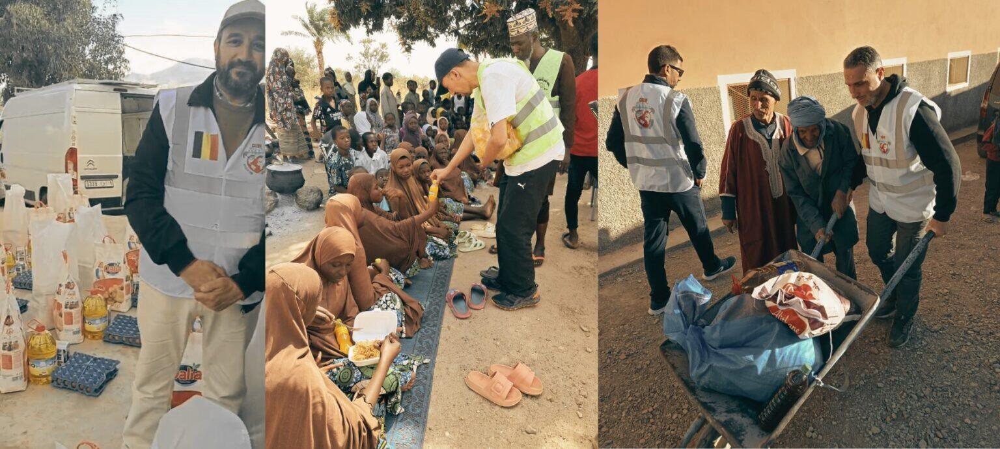

De l'aide,du cœur,de l'action.
Cœur en Action est une association humanitaire bruxelloise. En Belgique et à l'international, nous apportons de l'eau potable, des repas, des écoles et des soins à celles et ceux qui en manquent.

Nos actions
Nous répondons aux besoins essentiels des plus démunis, avec les populations locales et en partenariat avec d'autres associations, en Belgique comme à l'étranger. Touchez un domaine pour en savoir plus.
Eau potable
Forage de puits et distribution d'eau potable.
L'eau est vitale, mais trop de populations en sont encore privées. Avec notre projet Eau, nous forons des puits et installons des systèmes de distribution pour garantir un accès durable à une eau propre.
C'est moins de maladies liées à l'eau, de meilleures conditions de vie et un avenir plus serein pour des villages entiers.
Chaque goutte compte, chaque action sauve des vies.
Soutenir le projet EauAlimentation
Repas chauds et colis alimentaires.
Personne ne devrait souffrir de la faim. Nous distribuons des repas chauds et des colis alimentaires aux familles démunies, aux personnes sans abri et aux plus vulnérables.
Un repas, c'est plus qu'une assiette : c'est du réconfort, de la dignité et de l'espoir.
Soutenir les colis alimentairesÉducation
Rénovation d'écoles et matériel scolaire.
L'éducation est la clé d'un futur meilleur. Avec notre projet Scolarité, nous rénovons des écoles et fournissons du matériel scolaire aux enfants défavorisés.
Apprendre dans de bonnes conditions, avec un cartable et des fournitures, c'est une vraie chance d'échapper à la précarité.
Chaque enfant mérite d'apprendre et de rêver.
Soutenir le projet ScolaritéSanté
Cliniques et médicaments pour les plus vulnérables.
L'accès aux soins est un droit fondamental. Avec notre projet Santé, nous construisons des cliniques et distribuons des médicaments là où les soins manquent.
De meilleures infrastructures et des traitements accessibles sauvent des vies et redonnent espoir.
La santé ne devrait jamais être un privilège.
Soutenir le projet SantéSans-abris
Nourriture, vêtements et écoute dans la rue.
Vivre dans la rue, c'est affronter le froid, la faim et l'isolement. Nous apportons une aide concrète : distributions de nourriture et de vêtements, solutions d'hébergement temporaire.
Et au-delà des besoins essentiels, du réconfort et de l'écoute.
Personne ne devrait être laissé de côté.
Soutenir l'aide aux sans-abris

Faites un don, changez des vies
Votre don devient un repas, un accès à l'eau potable, des soins ou une place à l'école. Même un petit montant a un grand effet.
Le plus simple : scannez le code avec l'application de votre banque. Le bénéficiaire et le compte se remplissent tout seuls, il ne vous reste qu'à choisir le montant.
- Bénéficiaire
- Cœur en Action ASBL
- Compte (IBAN)
- BE62 9502 3442 2861
- Communication
- Don Cœur en Action
Sur ordinateur, copiez le numéro de compte et collez-le dans votre banque en ligne.
Rejoignez-nous, devenez bénévole
Envie d'agir concrètement pour les plus démunis ? Rejoignez Cœur en Action et participez à nos missions solidaires. Chaque main tendue fait la différence.
- Distribution de repas
- Soutien scolaire
- Aide aux sans-abris
- Projets humanitaires
Nos actions en vidéo
Nos campagnes, filmées sur le terrain.
Qui sommes-nous
Cœur en Action est une ASBL basée à Bruxelles qui vient en aide aux populations fragilisées en Belgique et à l'international. Notre but : améliorer les conditions de vie des personnes en précarité et favoriser un développement durable et équitable.
Nous menons des programmes de développement avec les populations locales, selon une méthode participative. Nous organisons aussi des actions d'urgence pour les victimes de crises et soutenons les enfants en grande pauvreté.
Nous travaillons avec d'autres associations et institutions de bienfaisance, belges et internationales, qui partagent nos valeurs.


Contact
- Téléphone, 7 jours sur 7
- +32 477 30 54 41
+32 465 90 95 51 - Adresse
- Rue Stroobants 62
1140 Bruxelles (Evere)